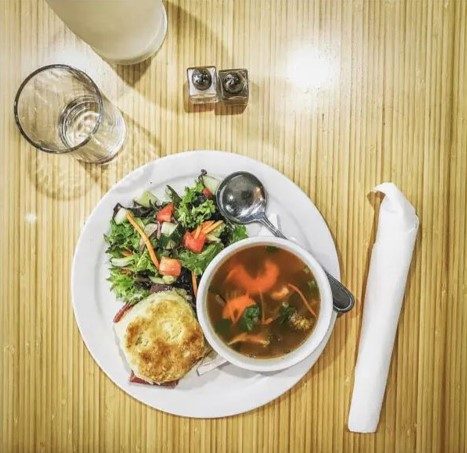

About Us
In September of 2015, The Stockpot’s doors opened in Virginia Beach, however the journey for Anne Galante and Patrick Edwards’ first restaurant started years before. Having worked together for many years, the embers for restaurant concepts were stoked as their experiences matured. In early 2014, they ignited their entrepreneurial fire as they ate their way through Europe for 3 months, amassing a wealth of ideas centered around culture, community and food. Upon their return, Anne and Patrick began to develop a soup restaurant concept. To test the waters, they popped-up at a weekly local farmer’s market. The Stockpot was born. Offering just two soup options and bread, they quickly developed a loyal following which helped instill the confidence they needed to make the bold leap forward. As the stars aligned, a space became available next to a well-known local gym, which just happened to be a stone’s throw away from the farmer’s market. Based on the premise of using quality ingredients, creating from scratch, and delivering with a smile, the soup restaurant concept morphed into a healthy comfort food café that sought to better its community through relationships built on a happy, healthy belly and a sincere conversation. With the support of the best clientele, an exceptional staff, and their loving families, Anne and Patrick’s dreams turned into reality, and continue to do so. Their second location, The Stockpot Norfolk, will be opening at the historic Selden Market in downtown Norfolk in late December of 2018.
Meet the Chef
Anne grew up in a tight-knit Italian family in Pennsylvania before moving to Hampton Roads in 2003 to study health and physical education at Old Dominion University. She worked at restaurants to pay her way through college, although those years were more a study of food than physical education. Her introduction to the restaurant industry went hand-in-hand with the elaborate dinner parties she threw, which delighted her friends and dinner guests. Anne credits her extended family with instilling that hosting mentality in her from a young age and is inspired most by the family get-togethers she would partake in as a child.
Patrick Edwards
Patrick, a true native of this area, was born and raised in Virginia Beach. He continued his education by attending Virginia Wesleyan University. Patrick has been in the hospitality industry for over 20 years and his knowledge in this field was instrumental when the decision was made to open The Stockpot. His strong ties to the community in addition to the new relationships formed through the business has allowed a continuous revolving door of friendly faces at the restaurant. Patrick is an avid outdoorsman whose hobbies include sports, crossword puzzles and his unique collection of vinyl albums.
Heading
In 2015, The city of Virginia Beach established the boundaries of the Vibe Creative Arts district. Its objective being “to serve as a vibrant center for the arts, culture, and technology and to support artists, technical, and creative businesses to help them flourish and cross-pollinate. It will serve to provide an opportunity for a sense of discovery for visitors and residents, enhance the quality of life for citizens, and stimulate economic development.” Since its inception, the district has become home to a unique grouping of businesses and individuals that have made the Vibe a destination for locals and tourists alike.
Bone Broth

In 2015, The city of Virginia Beach established the boundaries of the Vibe Creative Arts district. Its objective being “to serve as a vibrant center for the arts, culture, and technology and to support artists, technical, and creative businesses to help them flourish and cross-pollinate. It will serve to provide an opportunity for a sense of discovery for visitors and residents, enhance the quality of life for citizens, and stimulate economic development.” Since its inception, the district has become home to a unique grouping of businesses and individuals that have made the Vibe a destination for locals and tourists alike.